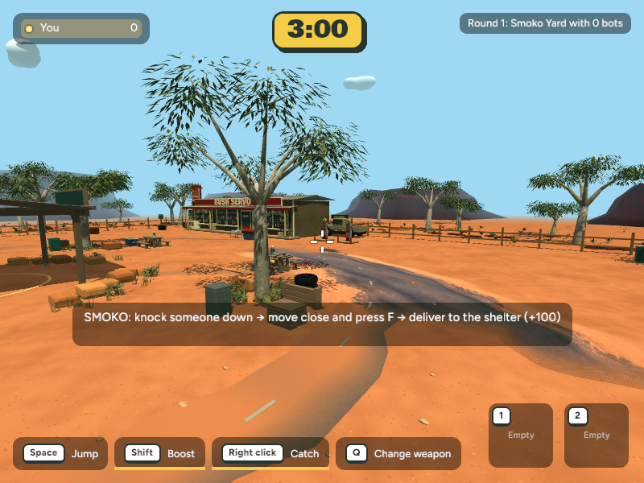
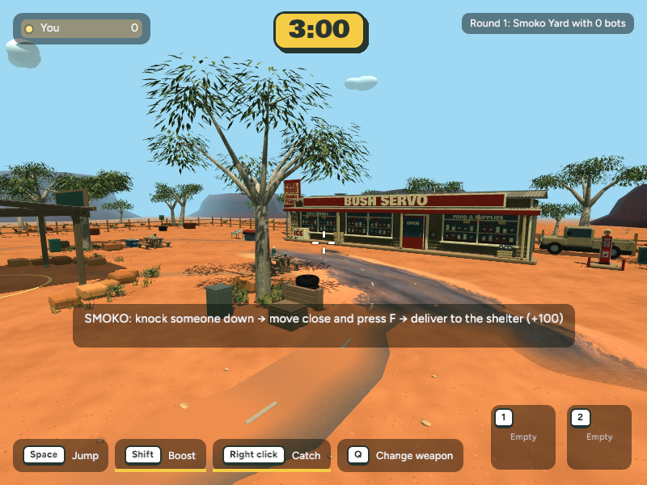
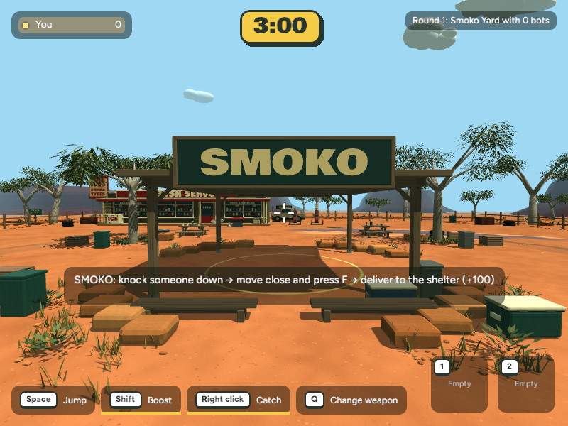
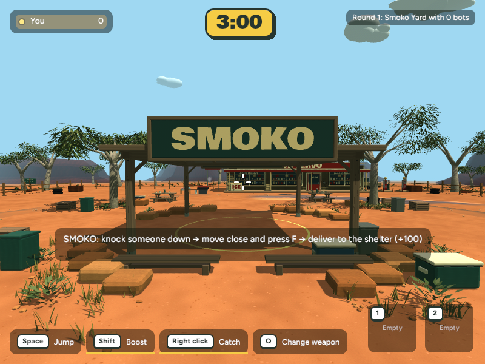
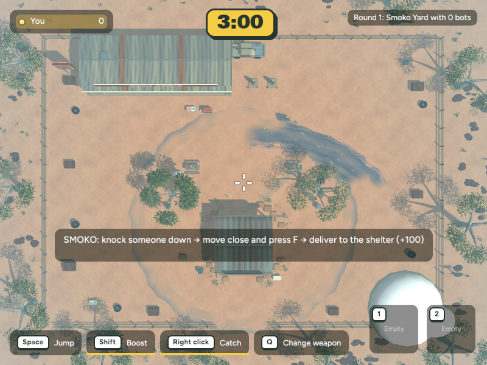
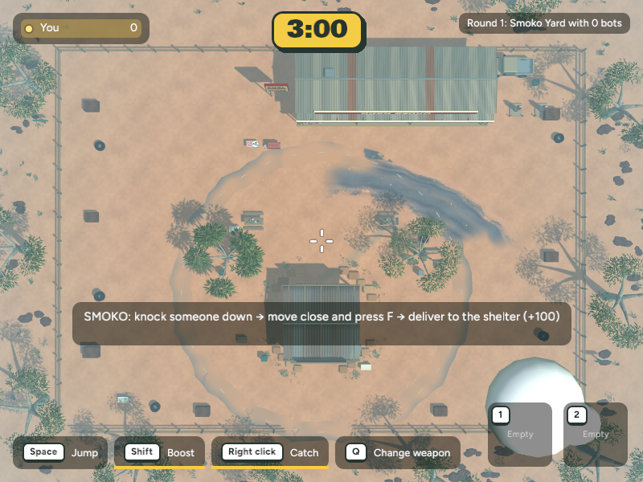

Bush Servo: shop placement comparison
This is a visual study of the two sites already specified in NEXT_UP.md. Both runs use the same gameplay camera positions. The north-west site is the current shipped placement; the north-east image shifts the visual model only for comparison. Collision and bot avoidance have not been moved in the north-east capture.
Option A · North-west
Current site. The shop stays left of the shelter, matching the concept's shop-left, smoko-centre composition. From the east approach, a foreground gum obscures some of the sign and windows. The western fence-side gap is the tighter route.
Option B · North-east
Moves the whole shop, pumps and parked ute to the opposite frontage. It is more visible from the east approach and leaves more room on the west side, but shifts the visual weight to the right and places the pumps/ute nearer the eastern fence.
Same east-picnic gameplay view

North-west · east-picnic approach

North-east · same camera
Same view from the shelter

North-west · south-side approach

North-east · same camera
Matching top-down footprint

North-west · top-down

North-east · same top-down camera
Measured clearances
Measurements use the full exported smoko_servo.glb bounds, which include the building, signs, pumps and parked ute, translated to each candidate position. They are conservative bounds, not collision shapes.
North-west model bounds
x −29.75 to 5.67 m
z −23.50 to −14.52 m
North-east model bounds
x −6.75 to 28.67 m
z −23.50 to −14.52 m
Fence gap
NW: 3.25 m west, 27.34 m east
NE: 26.25 m west, 4.33 m east
Both: 0.50 m at north edge
Circular road
NW has at least 2.02 m radial separation.
NE has at least 3.08 m radial separation.
- Both models stay inside the 66 × 48 m arena fence and clear the 19 m outer road radius.
- Each candidate overlaps one of the 12 player spawn spots, so 11 remain available; this matches the current placement's existing spawn filtering. Both block two of the 25 regular item spawn points, leaving the rest for the round.
- Both leave a route on each side of the shop footprint: the tightest side gap is 3.25 m at NW and 4.33 m at NE. The central approach lanes to the shelter remain clear. The final collision move should add a path-clearance test for two carried-player routes.
- Visual comparison only: the north-east capture keeps the current north-west collision, item filtering and bot avoidance. Do not use it as a playable north-east build yet.
Recommendation: keep the north-west site for the concept composition, then adjust the foreground view or shop details so the gum does not hide the sign. Choose north-east if east-side visibility and a wider west-side route matter more. The current north-west model is already fully inside the fence, and the runtime creates only this one shop instance; no source location or collision has changed in this study.
Reference